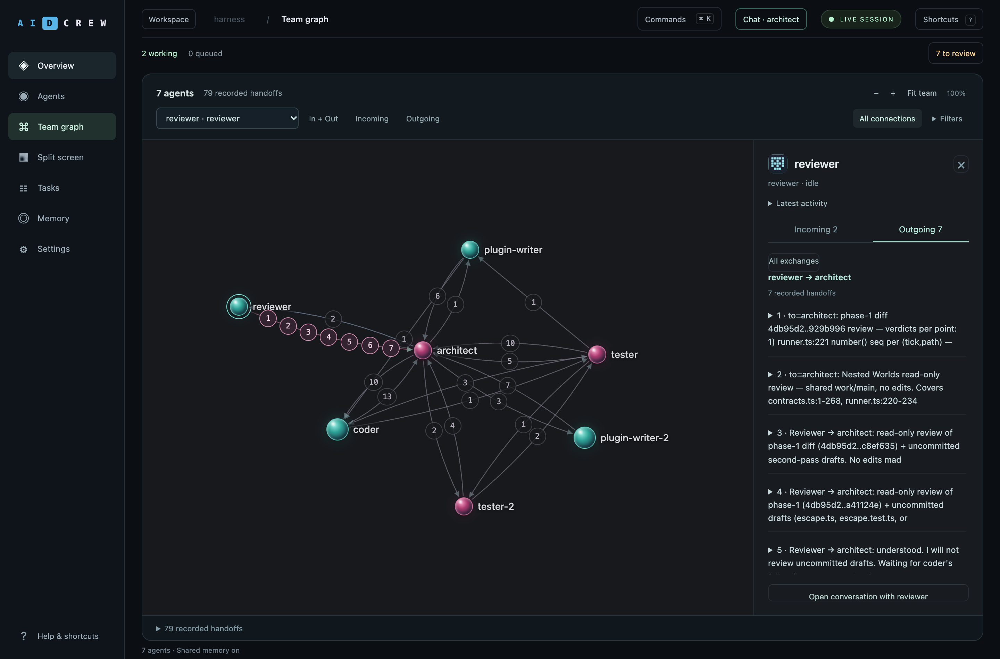
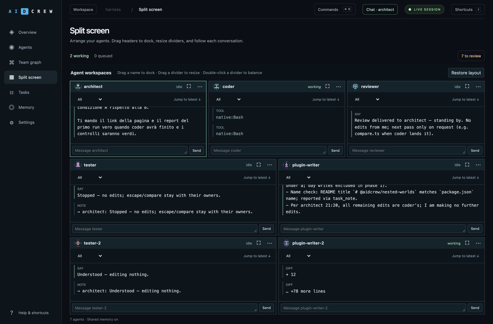
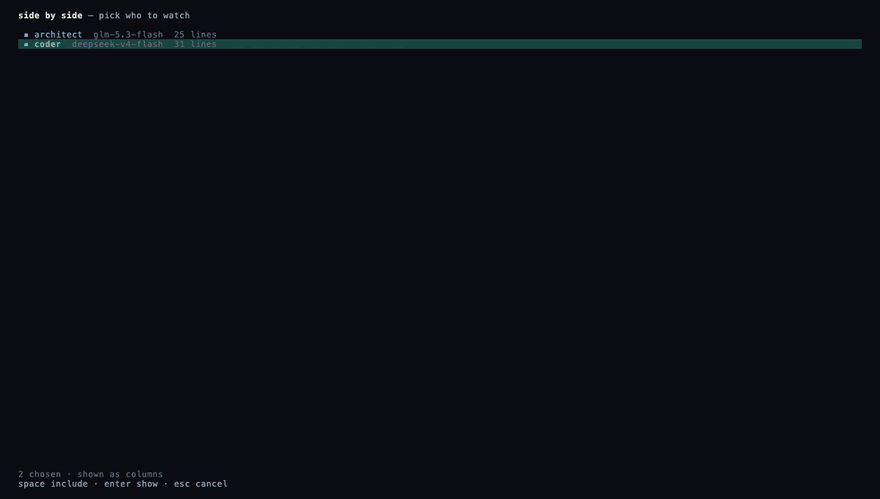

Memory you can inspect.
Explore shared notes as a graph of tasks and authors. Follow a connection to see where the context came from.
Choose a model for each role. See who is working, trace what agents tell each other, and step in when they need you. Your terminal and browser follow the same live session.

Inside the workspace
Keep the conversations you need side by side. Move agents between panes, resize a divider, or restore a balanced layout.

Explore shared notes as a graph of tasks and authors. Follow a connection to see where the context came from.
Choose your default contact and open a quick chat from any view. Keep decisions and the event log together in Overview.
Use your installed Claude Code CLI and subscription login as a team member. Share role, task and team context; attach to its native terminal when you need it.
Native setup and limits ↗Native Claude Code requires a separate installation on macOS or Linux. Its own permissions and subscription limits apply; unavailable usage costs remain unknown.
Mix models and providers in one session. Use the model that suits each job: planning, implementation or review. Follow usage per agent and inspect the cost of the completed session alongside its result.
Every job gets a git worktree on a branch of its own. When the leader ends a turn with
changes on it, the harness runs the project's check — bun test,
pytest, go test, cargo test, read off the files, or
whatever the config names — and merges the branch if it passes. If it fails, or the work was
never committed, the leader is sent back with the output.
The core has no dependencies and knows no provider or tool by name; a test fails the build if it ever learns one. What ships — the OpenAI, Anthropic and Gemini dialects, the filesystem and shell tools, the guards, compaction, prices — loads through the same registry a stranger's plugin does. A whole provider is about twenty lines.
The project collection 01 / World builders
Big ideas. Different models. One crew.
Explore what they built, how they worked and what it cost.
AIDCrew builds a multiplayer browser prototype, with its terminal, Web UI and game preview working side by side.
Supervised session. Explore the build, cost breakdown and source.
Watch AIDCrew build, inspect the outcome and follow the brief and source links.
See API spend by role, session time, verified requirements and remaining limits.
Inspect the team configuration, shared context, review workflow and additional instructions used during the session.
An earlier terminal walkthrough. The workspace above shows the current interface.
glm-5.3-flash; the coder builds, tests and commits on
deepseek-v4-flash; the leader verifies the branch and it comes home to
main. The whole run, through OpenRouter, cost under a cent.
agent_send: the files to touch, what each should do, and the check that proves it. The configured permissions determine which actions can proceed automatically.work/<job>, made for it when the checkout was. The harness shell tools enforce checkout boundaries; native Claude Code tools follow Claude’s own permissions.
Two agents side by side, so a handoff can be watched from both ends at once. The divider
moves with the mouse, or with ^← and ^→.

Drop a TypeScript module in ~/.aidcrew/plugins or .aidcrew/plugins.
No build step, no publishing, no restart. A plugin declares any of providers,
tools, loaders, hooks, prices and
ui — and may ask you a question before it registers.
The claim is enforced, not described. packages/core/src/architecture.test.ts
fails the build if the core imports a tool or a provider, reaches out of its own package,
or so much as names a real service in a string:
const forbidden = /\b(openai|anthropic|deepseek|openrouter|gemini|ollama)\b/iimport { definePlugin, defineProvider } from '@aidcrew/plugin-sdk'
import { z } from 'zod'
export default definePlugin({
name: 'my-service',
providers: [
defineProvider({
id: 'my-service',
endpoint: 'https://api.example.com/v1',
configSchema: z.object({ apiKey: z.string().min(1) }),
create: ({ apiKey }) => ({
id: 'my-service',
async *send(request, signal) {
// Translate the canonical request,
// stream back canonical deltas.
},
}),
}),
],
})read, write, edit, grep, glob, tree, head, stat, json, toml, outline, symbols, imports, deps, git-log, bash, skill, agent_send. Everything that only reads is a tool of its own, so looking something up never needs approving..mcp.json a project already has. Its tools arrive as ordinary tools; a server a project declares does not start until you say it may.The guards below apply to harness tools. Native Claude Code retains its own tool permissions; its native tools are not sandboxed by the harness.
Everything that arrives with a clone is inert until you type a command: a project's plugins are not imported, its MCP servers are not started, the parts of its config that let an agent act unasked do not apply. Answers are remembered in your own store, never in the project.
.git, .env, .ssh, .aws, private keys, the session database — in every mode.rm -rf, git push --force, git reset --hard, dd, curl … | sh. Approving one never approves the next. Headless, a question is a refusal.aidcrew undo to take it back.cd or git -C pointed at another checkout — the repository root included — is refused, and told where it was going.0600, never logged, never echoed. A committed config names the variable, never the value.Not a sandbox, and the security document says exactly what these are not.
Download v0.4.0 as a single binary. Native Claude Code is an optional, separately installed integration.
# macOS, Apple silicon
curl -Lo aidcrew https://github.com/antoniociccia/aidcrew/releases/latest/download/aidcrew-macos-arm64
chmod +x aidcrew && sudo mv aidcrew /usr/local/bin/
aidcrew --version
# then: sixty seconds against real files, with no key and no account
aidcrew demo
Also
macOS x64,
Linux x64,
Linux arm64,
Windows x64
and checksums.
Before a release is published, the binary it built is started on each of the three platforms.
On Windows the shell tool runs bash, which Git for Windows provides.
From source, with Bun 1.3 or later:
git clone --branch v0.4.0 https://github.com/antoniociccia/aidcrew && cd aidcrew && bun install && bun run build
Providers and plugins for services not yet covered. Reports from real use on Windows. Corrections to the model price list, with a link. Agent files and briefings that work well for a language or a kind of project. Palettes. The ground rules are short: the failing test first, comments that say why, three checks before a pull request.